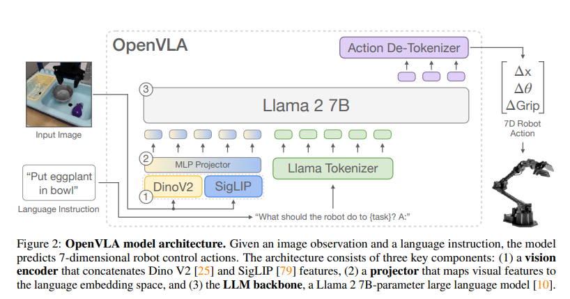
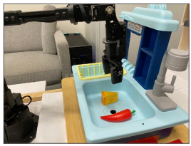
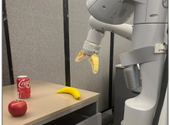
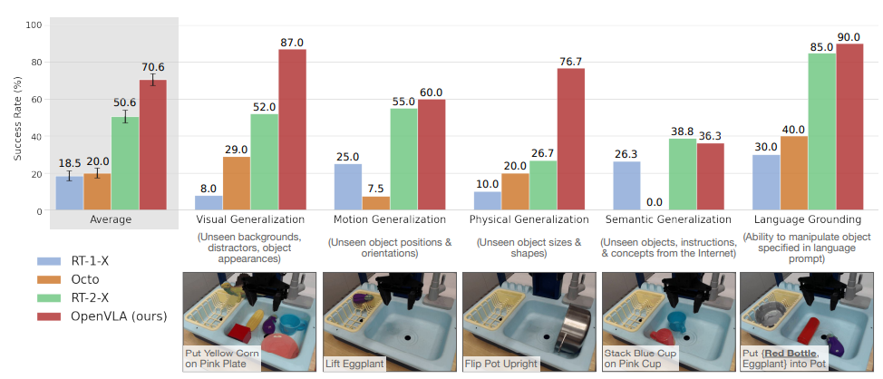
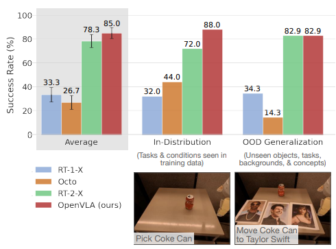
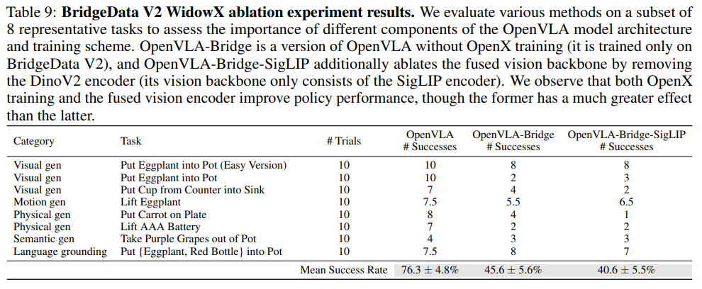
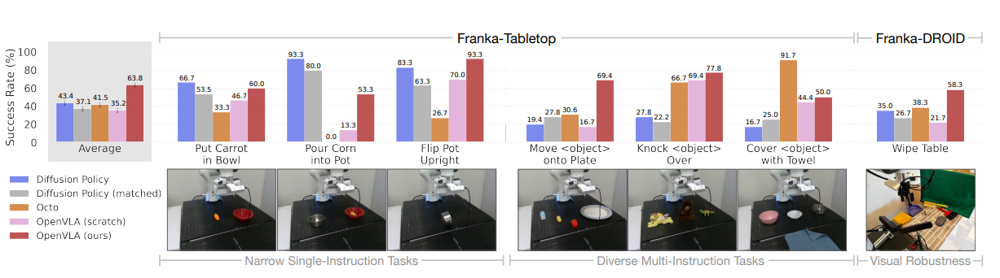
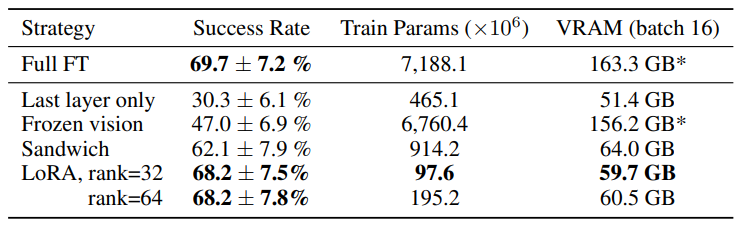
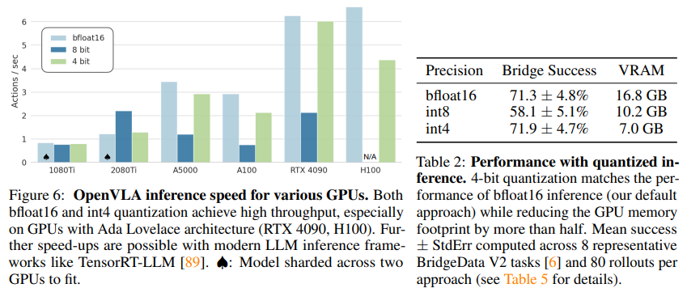
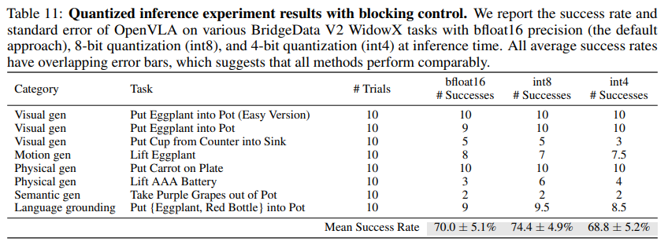

VLA_4. OpenVLA: An Open-Source Vision-Language-Action Model
Introduction
Prior VLAs are closed and fail to explore methods for efficiently fine-tuning. Octo compose pretrained encoders but with transformer-backbone and diffusion head initialized from scratch. OpenVLA adopts end-to-end approach, directly fine-tuning VLMs to generate robot actions(VLA). However, existing VLAs focus on single robot, and thus lack of generality and closed. OpenVLA is the first generalist VLA that is open-source. And it first demonstrates the effectiveness of parameter-efficient fine-tuning and quantization approachers for VLAs.
Model

VLMs
The architecture of VLMs consists of three main parts. 1. Visual encoder(600M) 2. Projector(2 layers MLP) 3. LLM backbone(7B Llama 2) Specifically, openVLA builds on Prismatic-7B VLM. It uses a two-part visual encoder consisting of SigLIP and DinoV2 models. Resulting feature vectors are concatenated channel-wise. The addition of DinoV2 is helpful for improving spatial reasoning, so is for robot control. Prismatic VLM is fine-tuned on these components using LLaVA 1.5 data mixture.
Training procedure
Like RT-2, we formulate the action prediction problem as a vision-language task, where an input observation image and a natural language task instruction are mapped to a string of predicted robot actions. We represent the actions to discrete tokens. Instead of the min-max bounds in RT-2, we use division of 1st and 99th quantile of the actions, so that ignore outlier. Since the tokenizer of OpenVLA language backbone Llama tokenizer only reserves 100 special tokens, so we overwrite the 256 least used tokens as RT-2.
Training Data
For a coherent input and output, we contain at least one 3rd person camera and use single-arm-end-effector control. For a balanced mix of embodiments, tasks, and scenes in the final training mixture, we use the data mixture weights of Octo. Octo down-weights or removes less diverse datasets.
Design decisions
Instead of training on the full OpenX dataset, we first train OpenVLA on the smaller BridgeData V2 for exploring design decisions. Since increased image resolution does not improve performance, so we use 224*224 inputs rather than 384*384 inputs. For VLMs, freezing vision encoders leads to higher performance, because it may better preserve the robust features learned from Internet-scale pretraining. But fine-tuning the vision encoder during VLA is crucial for performance. We attribute this performance to spatial detail.
Experiments
1. Out-of-the-box performance


We evaluate two robots: WidowX(left) and Google robot(right).

[WidowX robot evaluation results]
[Google robot evaluation results] RT-2-X achieves higher performance in semantic generalization, which is expected given that it uses larger Internet data and co-fine-tuned with both robot data and Internet data. However, OpenVLA performs better in all other task, which is attributed to a larger training dataset(970k for OpenVLA vs. 350k for RT-2-X) and fused vision encoder(ablation analysis in Table 9).
2. Data-efficient adaptation(fine-tuning)

We do full fine-tuning of all model parameters, using small datasets with 10-150 demonstrations of a target task. We compare diffusion policy trained from scratch, where diffusion policy(matched) is a version that matches the input and output as OpenVLA and Octo fine-tuned on the target dataset. To assess benefit of large-scale OpenX pre-training, we also compare OpenVLA(scratch). We can see that diffusion policy outperforms on narrower single-instruction tasks, which is expected with action chunking and temporal smoothing.3. Parameter-efficient fine-tuning

We investigate the effectiveness of parameters. Full fine-tuning: updates all weights Last layer only: updates the last layer of transformer-backbone and token embedding matrix. Frozen vision: freezes the vision encoder. Sandwich fine-tuning: unfreezes the vision encoder, token embedding matrix, and last layer. LoRA: low-rank adaptation technique.LoRA
Suppose we update weight matrix 4096*4096 W. If we full fine-tune, then we need to update 4096*4096=16777216. LoRA uses low-rank matrices with rank value r.
X(4096) → A(4096 * r) B(r*4096) → output(4096)
Then for r = 8, we just update 2 * 4096 * 8 = 65536 parameters.
Fine-tuning only the last layer or freezing the vision encoder leads to poor performance, suggesting that further adaptation of the visual features is crucial. LoRA achieves the best trade-off between performance and training memory. It matches full fine-tuning performance while fine-tuning only 1.4% of the parameters. Also we can see that rank of LoRA has negligible effect on performance, so using r = 32.
4. Memory-efficient inference via quantization

Rather than FP32 precision, we use bfloat16 precision for inference, so that cuts the memory foorprint in half. Since GPUs perform operations based on 16-bit precision, 8-bit quantization incurs computational overhead during the process of converting weights back to 16-bit. Consequently, the performance degrades because the inference speed fails to keep up with the real-time movement of the robot. Ultimately, while the intrinsic inference capability remains comparable to other quantization approaches, performance degradation occurs due to the difference in inference speed. When evaluated under blocking control—where the robot waits for inference to complete before executing each action—the performance levels are shown to be nearly equivalent.
Limitations
- Support single-image observations.
- Inference throughput
- Performance Due to compute limitations, many VLA design questions remain unexplored. For example, size of base VLM, co-training, and what visual features are best-suited for VLA.